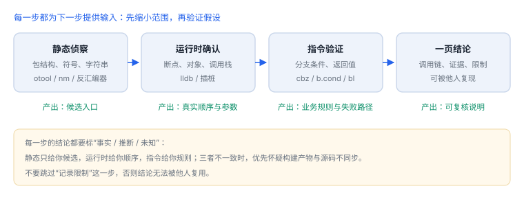

从入口到功能：一次完整分析
一次完整的分析是“静态定位 → 运行时确认 → 指令级验证 → 写成可复核的结论”
把前面几讲串起来，用自己应用里的一个功能走完整流程。目标不是“找到秘密”，而是产出一份别人能照着复现的说明。
1. 选目标：边界清晰、有状态
建议选一个边界清晰、有网络与本地状态的功能，例如“登录后拉取列表并缓存”。它同时覆盖：入口（按钮/场景）、鉴权（令牌）、请求（URL/参数）、解析、存储与错误处理。

2. 静态定位
- 从字符串里找接口路径、错误文案、日志前缀。
- 找到交叉引用，定位到所属函数与类。
- 列出候选方法：请求构造、响应解析、缓存读写、错误映射。
先缩小范围
strings -a YourApp | grep -E "/api/|token|list" | head -20
nm -m YourApp | grep -i "ListService\|TokenStore" | head -203. 运行时确认
- 在候选方法上设断点，确认实际调用顺序。
- 记录参数与返回值，标出与源码预期的差异。
- 用插桩制造一次失败（超时、401），观察错误分支。
4. 指令级验证
当符号不足或行为与预期不符时，看反汇编：确认分支条件、错误码来源、是否走了某个被怀疑的路径。重点看“决定走哪条路”的比较与跳转，而不是逐条翻译。
5. 输出格式
一页结论模板
功能：登录后拉取列表
入口：ListViewController.viewDidLoad → ListService.load()
调用链（按运行时确认）：load → TokenStore.current → URLSession.dataTask → decode → Cache.save
关键判断：令牌为空时直接返回错误，不发起请求
证据：断点截图 / 反汇编 0x100004a38 的 cbz
限制：仅在 Debug 构建与 iOS 17.x 上验证，Release 可能内联
后续：验证 401 分支与缓存一致性6. 常见卡点
| 卡点 | 原因 | 处理 |
|---|---|---|
| 断点打不中 | 方法被内联或改名 | 改用地址断点或从调用方反查 |
| 看不到变量 | Release 优化 | 用寄存器与返回值推断 |
| 行为与源码不一致 | 构建产物与源码不同步 | 核对哈希与构建号 |
| 日志里没有线索 | 隐私标注或日志级别 | 开发构建临时提升，注意脱敏 |
7. 练习：一周完成一次完整分析
- 按模板完成一份一页结论，附三条证据。
- 让同事只凭结论复现一次，记录对方卡住的位置并补充说明。
- 把结论里“推断”的部分单独列出，标出需要补什么证据。
8. 阶段产出：每步一个可验证物
| 阶段 | 产出 | 不通过时的表现 |
|---|---|---|
| 静态定位 | 候选入口 | 断点打不中 |
| 运行时确认 | 调用顺序与参数 | 与源码预期不符 |
| 指令验证 | 业务规则 | 分支条件解释不通 |
结论要带限制
“在 Debug 构建、iOS 17.x 上验证”比“已验证”有用得多；没有限制的结论无法复用。
“在 Debug 构建、iOS 17.x 上验证”比“已验证”有用得多；没有限制的结论无法复用。
9. 一次完整分析的记录示例
| 阶段 | 用到的命令 | 产出 |
|---|---|---|
| 静态定位 | otool -L、nm、strings | 候选入口 3 个 |
| 运行时确认 | 符号断点、调用栈 | 确认其中 1 个被真实调用 |
| 指令验证 | 读参数与返回值 | 确认成功与失败两条分支 |
| 结论整理 | — | 一页说明：入口、输入、分支、限制 |
记录的价值在于“别人能照着复现”，而不是“我懂了”。每个阶段都要写下命令与观察结果。
10. 工程权衡：什么时候收手
| 信号 | 判断 |
|---|---|
| 继续需要构造特殊环境 | 收益下降，先记录再评估 |
| 连续两次假设被证伪 | 说明模型错了，回退到上一层 |
| 结论已能支持决策 | 停止，把限制写清楚 |
分析不是越深越好：能支持当前决策的结论，就是足够的结论。
11. 数据细节：一次分析的时间预算
| 阶段 | 耗时量级 | 容易超时的原因 |
|---|---|---|
| 静态定位 | 半小时到两小时 | 符号缺失，靠字符串摸索 |
| 运行时确认 | 十几分钟 | 断点打不中，反复试地址 |
| 指令验证 | 半小时 | 优化导致读不到变量 |
| 结论整理 | 二十分钟 | 没有及时记录，回头补 |
如果某一阶段明显超出量级，通常不是“难”，而是方法错了——停下来换线索比硬撑更快。
12. 自测
- 为什么结论必须写清“在哪个构建、哪个系统版本上验证”？
- 静态定位与运行时确认各自解决什么问题？
- 一页结论中“限制”一栏为什么不能省略？